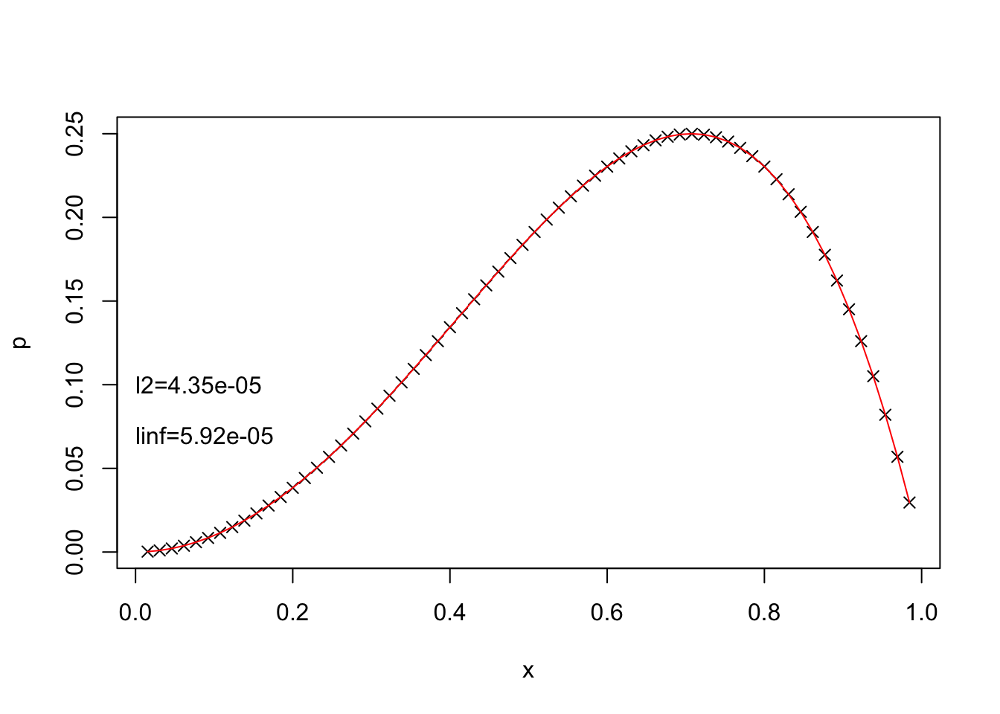

library(gsignal)
poisson.dst <- function(r) {
n <- length(r) + 1
eig.val <- -4 * sin(0.5 * seq(n-1) * pi / n)^2
idst(dst(r) / eig.val)
}1次元Poisson方程式
numerics
境界値問題を数値的に解く
1次元Poisson方程式を数値的に解いて誤差を調べてみます。
定式化
内部領域\(\Omega:0 < x < 1\)において
\[ \nabla^2 u = r \tag{1}\] が与えられ、境界 \(\partial\Omega: x=0, x=1\) で\(u(0)=u(1)=0\) （Dirichlet境界条件）であるとします。
領域を\(n\)個に分割し、\(x_0=0,\,x_n=1\)とする。Equation 1を中央差分で離散化します。
\[ \frac{\phi_{i+1} + \phi_{i-1} - 2\phi_i}{h^2} = \rho_i \tag{2}\]
行列とベクトルを用いると、Equation 2を表すと次のように書けます。
\[ \begin{bmatrix} -2 & 1 & \dots & 0\\ 1 & -2 & 1 & \vdots\\ \vdots & & \ddots & \\ 0 & \dots & 0 & -2 \end{bmatrix} \begin{bmatrix} \phi_1 \\ \phi_2 \\ \vdots \\ \phi_{n-1} \end{bmatrix}= \begin{bmatrix} \rho_1 \\ \rho_2 \\ \vdots \\ \rho_{n-1} \end{bmatrix} \]
実装
高速フーリエ変換
行列の固有値が\(\lambda_i=-4\sin^2(i\pi/2n)\)であることを用いると、高速フーリエ変換（FFT）を用いて効率的に解くこともできます。 gsignalパッケージの離散sin変換dst()とその逆変換idst()を用いると次のように書けます。
テスト
テスト函数
\[ u(x) = x^2 - x^4 \tag{3}\]
\(\partial\Omega\)で0となります。
\[ r(x) = 2 - 12x^2 \tag{4}\]
n <- 65 # num of internal point + 1
x0 <- 0
x1 <- 1
hx <- (x1 - x0) / n
x <- seq(x0+hx, x1-hx, by=hx)
f <- function(x) {
x^2 - x^4
}
ddf <- function(x) {
2 - 12*x^2
}
ptrue <- f(x)
q <- ddf(x)
p0 <- f(x0)
p1 <- f(x1)
r <- q * hx^2
r[1] <- r[1] - p0
r[length(r)] <- r[length(r)] - p1p <- poisson.dst(r)
dp <- p - ptrue
l2 <- sqrt(mean(dp**2))
linf <- max(abs(dp))
plot(x, p, xlab="x", ylab="p", pch=4)
lines(x, ptrue, col="red")
text(0.0, 0.1, paste("l2=", format(l2, digits=3),sep=""), adj=0)
text(0.0, 0.07, paste("linf=", format(linf, digits=3), sep=""), adj=0)
切断誤差
差分法
差分法の誤差を確認しましょう(LeVeque 2007)。 \(u(x)\)をTalyor展開すると次のようになります。
\[ \begin{aligned} u(x+h) &= u(x) + hu'(x) + \frac{1}{2}h^2u''(x) + \frac{1}{6}h^3u^{(3)}(x) \\ &+ \frac{1}{24}h^4u^{(4)}(x) + O(h^5)\\ u(x-h) &= u(x) - hu'(x) + \frac{1}{2}h^2u''(x) - \frac{1}{6}h^3u^{(3)}(x) \\ &+ \frac{1}{24}h^4u^{(4)}(x) + O(h^5) \end{aligned} \tag{5}\]
Poisson方程式に現れる2階微分はEquation 5の差を取ることにより次のように書けます。 \[ D^2=u''(x) + \frac{1}{12}h^2u^{(4)}(x) + O(h^6) \]
\(h\)が小さいとすると、主要な差分誤差は
\[ \tau= \frac{1}{12}h^2u^{(4)}(x) \] と見積もられます。
これを2回積分して\(\partial\Omega\)で誤差が0であることを利用して定数を定めると、Poisson解の誤差は次のように書けます。
\[ e(x) = -\frac{1}{12}h[u''(x)+\{u''(0)-u''(1)\}x-u''(0)] \tag{6}\] Equation 3の場合、Equation 6は \[ e(x) = -h^2x(1-x) \tag{7}\] となります。
数値誤差とEquation 7を比較してみましょう。
plot(x, dp, xlab="x", ylab="p-ptrue", pch=4)
lines(x, hx * hx * x * (x - 1), xlab="", ylab="", col="red")References
LeVeque, R. J., 2007: Finite difference methods for ordinary and partial differential equations. Society for Industrial; Applied Mathematics,.